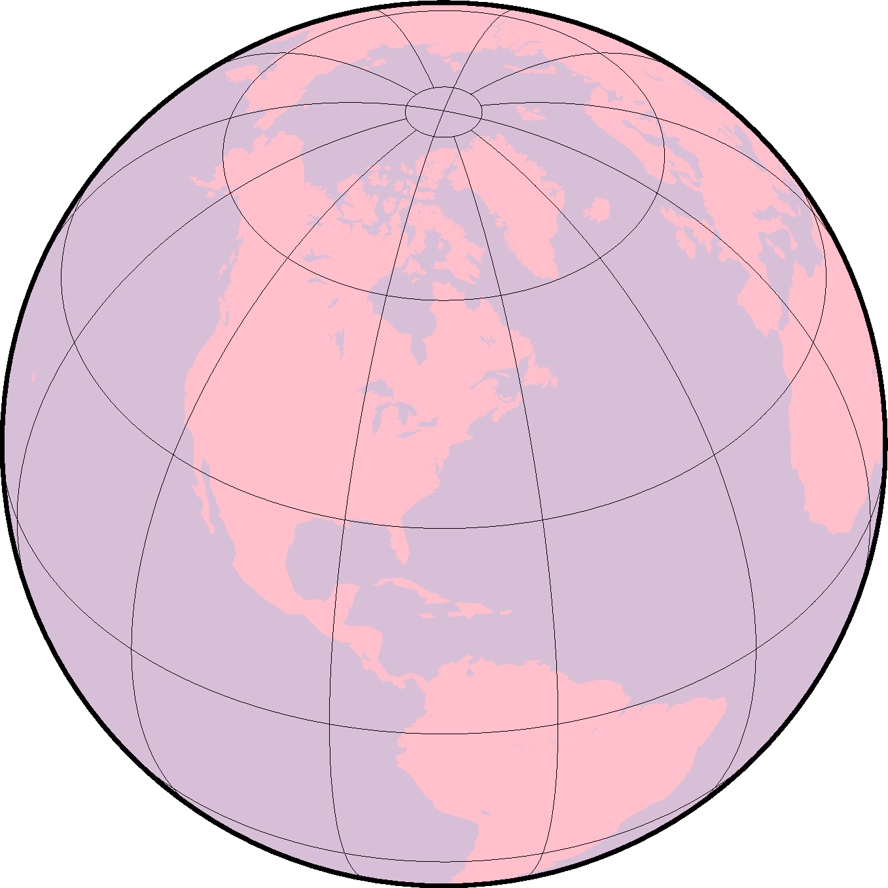
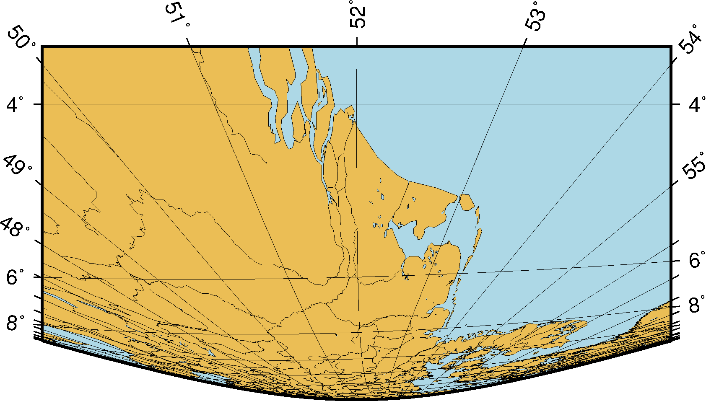

7.10. -Jg：正交投影¶
正交方位投影是一种从无穷远距离处的透视投影，因而常用于绘制从外太空看地球。与Lambert等面积投影以及立体投影类似，一次只能看到一个半球。该投影既不是等面积也不是保角，在半球边界处有较大得畸变。从投影中心出发的任意方向是真实的。
该投影的参数为:
-JG<lon>/<lat>[/<distance>]/<width>
-Jg<lon>/<lat>[/<distance>]/<scale>
<lon>/<lat>是投影中心位置<distance>是边界离投影中心的度数，默认值为90<scale>地图比例尺1:xxxx或<radius>/<latitude>（<radius>是纬线<latitude>与投影中心在图上的距离）
示例:
gmt pscoast -Rg -JG-75/41/4.5i -Bg -Dc -A5000 -Gpink -Sthistle -P > GMT_orthographic.ps

{kind=link}
使用正交投影绘制半球
-Jg 加上更多的参数时还可以用于绘制透视投影，以在二维平面内模拟从太空看三维的地球。具体的参数为:
-JG<lon>/<lat>/<alt>/<az>/<tilt>/<twist>/<width>/<height>
<lon>/<lat>投影中心的经纬度<alt>是观察者所处的海拔，单位为km。若该值小于10，则假定是观察者相对于地心的距离，若距离后加了r，则表示观察者与地心的距离（单位为km）。<az>观察者的方位角，默认值为90度，即从东向观测<tilt>倾角（单位为度），默认值为60度。若值为0则表示在顶点直接向下看，值为60则表示在顶点处沿着水平方向30度角的方向观察<twist>扭转角度，默认值为180度。This is the boresight rotation (clockwise) of the image. The twist of 180º in the example mimics the fact that the Space Shuttle flies upside down.<width>/<height>是视角的角度，单位为度，默认值为60。This number depends on whether you are looking with the naked eye (in which case you view is about 60º wide), or with binoculars, for example.<scale>as 1:xxxxx or as radius/latitude where radius is distance on map in inches from projection center to a particular oblique latitude
示例:
gmt pscoast -Rg -JG4/52/230/90/60/180/60/60/5i -Bx2g2 -By1g1 -Ia -Di -Glightbrown \
-Wthinnest -P -Slightblue --MAP_ANNOT_MIN_SPACING=0.25i > GMT_perspective.ps

{kind=link}
透视投影